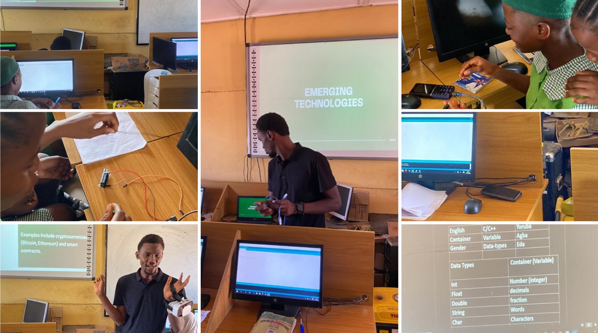
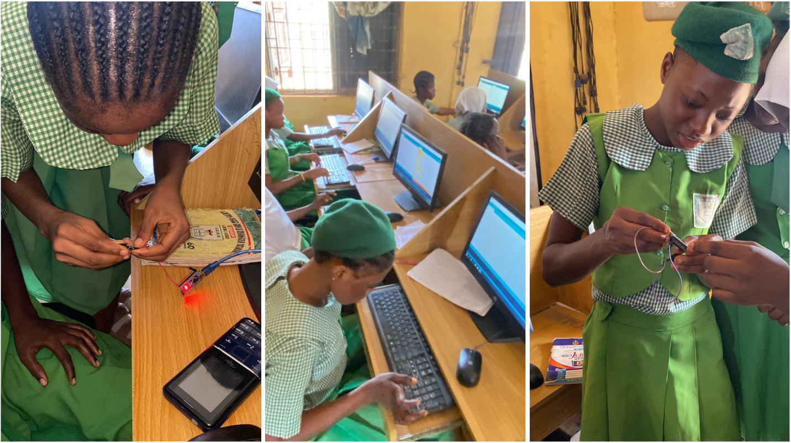

We were determined to make an impact. At Ijebu Igbo Girls Grammar School, that determination met a classroom full of young girls eager to understand what the future could look like beyond their immediate environment. For many of them, technology was something they had heard about—but had never truly explored. This visit was designed to change that.
Opening the Door to Possibility
The session began with something simple but powerful—exposure. Students were introduced to a wide range of technology careers, not as abstract ideas, but as real paths people take every day to solve real problems.
- Robotics
- Blockchain systems
- Artificial Intelligence
- Cybersecurity
- Data Analysis
- Product Design
- Web Development
- Project Management
For many of the girls, it was the first time these terms were being connected to actual career possibilities.
“Exposure is often the first step that changes how a student sees their future.”
From Listening to Doing
But the session did not stop at explanation. We moved into hands-on learning—bringing ideas out of theory and into practice. Using Arduino Nano, students were introduced to digital making and physical computing. They saw, in real time, how code connects to hardware and how ideas can become working systems. It was no longer just information. It was interaction.

Ijebu Igbo Girls Grammar School students coding and building smart system during the hands-on session
Learning Through Experience
To make the session more engaging, we also introduced Virtual Reality. For many students, it was their first time experiencing a simulated digital environment. The reactions were immediate—curiosity, laughter, surprise, and excitement. Technology was no longer something distant. It was something they could touch, see, and experience.
“When learning becomes experience, understanding becomes natural.”
What We Observed
Throughout the session, one thing became clear. The curiosity was already there. What was missing was access. Access to tools. Access to exposure. Access to structured guidance. Once those were introduced, the response was immediate. Students began asking questions, not just about what technology is, but how they can be part of it.

Ijebu Igbo Girls Grammar School students coding and building smart system during the hands-on session
A Shift in Perspective
By the end of the session, something had changed. Technology was no longer seen as distant or unreachable. It became something within reach, something they could learn, build, and grow into. Some students began expressing interest in STEM fields for the first time with clarity and confidence.
“When students realize they can participate in building the future, everything changes.”
The Bigger Picture
Across many classrooms, the pattern is consistent. The potential is already present. What often makes the difference is exposure. And when exposure is combined with practical experience, confidence begins to grow. This is where transformation begins.
The Role of Tech with Khalid Foundation
At Tech with Khalid Foundation (TWiK), the mission is simple but intentional: To ensure that young people are not limited by what they lack access to. Instead, they are introduced to opportunities that allow them to explore, build, and imagine differently.
“Background should never define potential.”
What Comes Next
The visit to Ijebu Igbo Girls Grammar School is one step in a broader journey. There are more schools. More students. More opportunities to create meaningful exposure. What was planted in this classroom is still growing.
Support the Next Classroom
More students are ready to experience this same shift—from curiosity to clarity.